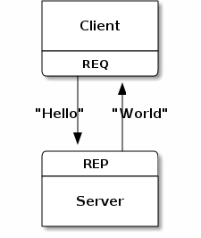
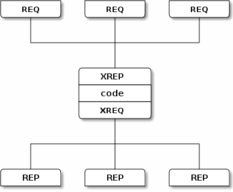
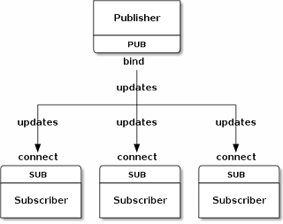
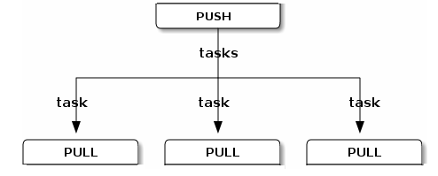
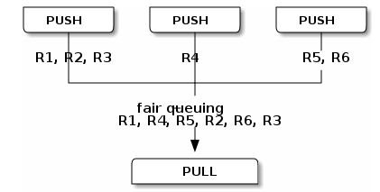
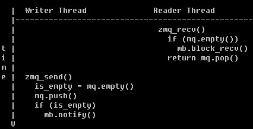
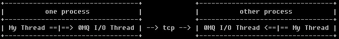

ZeroMQ: Lightweight Message Queue
Kasicass
gamecoder@work
Part I: ZeroMQ 的起源

从 AMQP 说起
- an open standard application layer protocol for message-oriented middleware
- message orientation
- queuing
- routing (including point-to-point and publish-and-subscribe)
- reliability and security
- AMQP，让各个厂商的中间件间相互通讯
- 出现于2005~2006年
一些 AMQP 的实现
- OpenAMQ(C)
- RabbitMQ(erlang)
- Apache Qpid(C++/Java)
- Red Hat Enterprise MRG
- 实现者众，被业界所接受
AMQP 的反思
- iMatix，AMQP的发起公司之一
- 来自iMatix的反思
- AMQP还是太重了一点
- 学习、使用成本有点高
- 能否再轻量级一些
ZeroMQ 诞生
- 在raw socket之上封装了一点点
- 比raw socket好用的东东
- 当然，也有限制 (容后再禀)
- 开发者，iMatix的一群人，面向金融行业（业务逻辑决定设计）
- http://www.zeromq.org/
Part II: Learn ZeroMQ by Example

Example #1: Echo Server
- "tcp://" - tcp socket
- 创建socket很简单
- 监听多个endpoints
- message queue, 就是不用关心server/client的启动顺序
Example #1: Echo Server
- request/reply pattern
- 关键就是保证request/reply这个状态机
- 
Example #2: Simple File Transfer
- multi-part message
- 一个message，分为multi-part来传递
- 通过zmq_getsockopt/ZMQ_RCVMORE检查是否multi-part message
Example #3: Advanced Echo Server (1)
- multi-thread server
- "inproc://" - in process communication (lock-free queue)
Example #3: Advanced Echo Server (1)
- xrequest/xreply pattern
- load balance
- 
Example #3: Advanced Echo Server (2)
- multi-process server
- "ipc://" - inter process communication (domain socket)
- add/remove worker dynamically
Example #3: Advanced Echo Server (3)
- zmq device
- 一些常见的分发工作，交给 device 吧
- QUEUE, which is like the request-reply broker
- FORWARDER, which is like the pub-sub proxy server
- STREAMER, which is like FORWARDER but for pipeline flows
Example #4: News Publisher/Subscribler
- publish/subscrible pattern
- 不保证每一条message都能收到
- filter作为message的前缀，自动在sub端做过滤，""表示接收任意消息
- 对于sub，一定要设置filter(ZMQ_SUBSCRIBE)
- 
Example #5: Producer/Consumer (1)
- pipeline pattern
- 一条message只被一个pull接收
- 保证每条message都有接接收者
- 这里的程序是 onc-producer multi-consumer
- 
Example #5: Producer/Consumer (2)
- 很容易可以改写成 multi-producer one-consumer
- socket type 和 bind/connect 之间是独立的
- 
Part III: ZeroMQ 使用实例
- 如何组合各种pattern，使用者决定
- 拓扑结构不要太复杂
- 不支持 connection 管理，比较适合可信任网络(局域网)内进程间的通讯
- 对于stateless request，很容易做并发
实例(1): 网游网络层框架
- Connection Manangement：与 libevent 共存 (ZMQ_FD/ZMQ_EVENTS)

- 进程间RPC：protobuf/json，用啥都可以

实例(2): Mongrel2
- The Language Agnostic Web Server
- http://mongrel2.org/
- 与上一页说的用法其实是一样的
- mongrel2 提供 connection manangement
- mongrel2 与 worker 之间通过 0MQ 通讯

Part IV: ZeroMQ Internals
- coder 总喜欢一点点 Internals
ZeroMQ Internals: 线程间通讯
- 线程之间通过 mailbox(domain socket) 来实现 queue empty/full 的 notification
- mailbox 每次发送的 command_t 很小(< PIPE_BUF)，操作系统保证原子性
- 线程间的 zmq_msg_t 的传递，通过 queue 直接传递 pointer
- queue 通过cpu 的 xchg, cas 实现 lock-free
- 
ZeroMQ Internals: 进程间通讯
- zmq_init(io_threads), io_threads参数决定了启动几个 0MQ I/O Thread
- 
谢谢收听！
- ZeroMQ The Guide, 最权威的使用手册
- ZeroMQ 深入分析，我的几篇博文
- 本ppt所有demo，感谢github :-P
- 感谢ZeroMQ，让网络程序如此有趣！
- 感谢S5，让幻灯片的制作如此轻松！